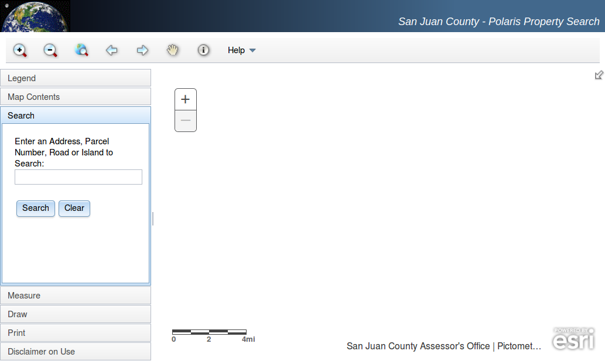

Instantly Loading Web Maps
Here to discuss making your web maps load instantly on the client's machine
Well, Almost
depending on the speed of the device and library sizes
Nick Peihl I'm nick peihl...
Mad Science I'm officially the GIS coordinator, but mostly mad scientist...
San Juan County
🗺So I make maps..
💻for computers
📱and mobile phones
⚠And I've learned that performance matters
📶especially for citizens in my county whose internet connections are...
💩well, you know
Polaris
We, like many counties, have a map portal. Ours is called Polaris. I created Polaris three years ago which was my first foray into JS.
Issues
There are two major issues
1. 📵
It's not responsive. It's much too complex right now for mobile devices.
😬
My fault. Still figuring out how to resolve that.
2. 🏋
It's a huge framework. Even minified polaris is ~3MB!
😕
Even compiling doesn't reduce the size of those frameworks much. So I don't have much control over that
Service Worker
Recently I discovered Service Worker. A new browser technology that saves static assets in the browser, even after the browser is closed.
Service Worker Precache
Service Worker precache is a helper module for creating a service worker for your static assets
GOOD
...
staticFileGlobs: [
rootDir: '/*.html',
rootDir: '/js/app.js'
rootDir: '/css/app.css',
rootDir: '/img/*.png'
]
...
You can use wildcards to specify the resources that will get cached. But don't get too crazy with wildcards.
BAD
rootDir: '/**/*.png|.jpg|.gif'
YMMV, but I did something like this and the Service Worker cached 30MB of assets that I wasn't even using
☑ Assets
So the assets that power our application shell can load from the SW instead of waiting for the network. Any time the service worker file is changed by the build script, the assets will be downloaded to the client again to make sure they are current.

Map Tiles???
What about the map tiles? Can we cache those?
...
runtimeCaching: [{
urlPattern: /Aerials_2013\/MapServer\/tile\/0,
handler: 'fastest'
}]
...
Here we are adding the map tiles from the initial map level, zero in this case. The browser asks both the cache and the network for the images and loads them. If the image is already stored in the cache this is almost always the fastest. But the image is still requested from the server. If the image isn't in the cache or has changed it is added or replaced in the cache for next time.
DEMO
Show how this works in Chrome Dev Tools using the network throttle. Show where the Service Worker cache can be seen and cleared in Dev Tools.
Questions?